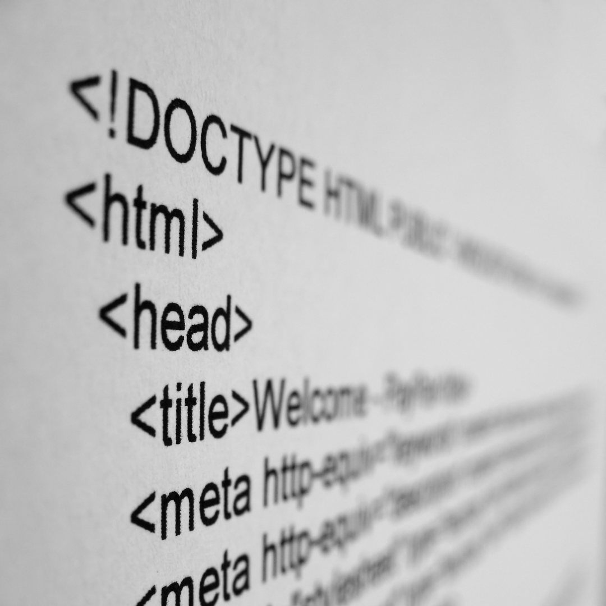

Post #1
Role models que podemos seguir e admirar. A área de tecnologia ainda é composta por uma maioria de homens, e as mulheres podem e devem ter mais reconhecimento e representatividade. Repare que alguns momentos históricos na computação foram protagonizados por mulheres e esperamos que essas histórias inspirem vocês, assim como nos inspiram constantemente: